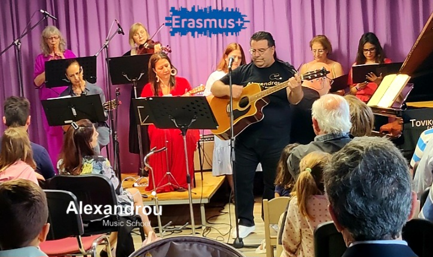
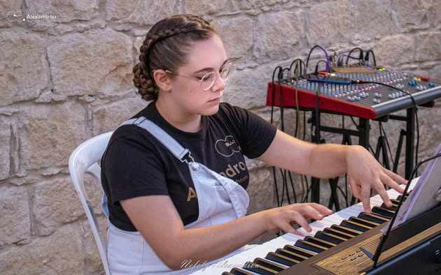
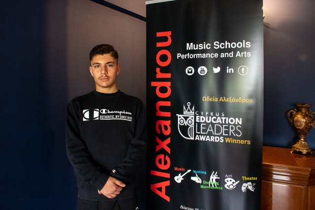
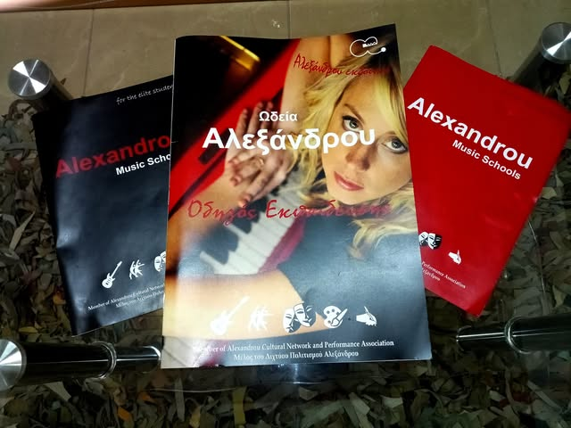
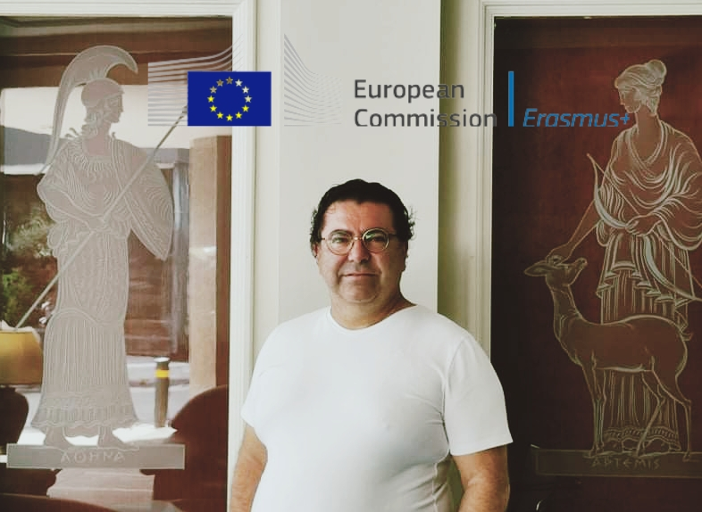

Alexandrou Art Association
Ίδρυμα Χρίστου Αλεξάνδρου · Erasmus+ Διαπιστευμένο · Από το 2019
Founded by Christos Alexandrou · Erasmus+ Accredited · Since 2019
«...παραμένει προσηλωμένο στο όραμά του για ποιοτική εκπαίδευση ενηλίκων μέσω των τεχνών, συνεχίζοντας να μαθαίνει πέρα από τα σύνορα.»— από τη δημόσια σελίδα του Χρίστου Αλεξάνδρου
"...remains committed to its vision of quality adult education through the arts, continuing to learn beyond borders."— from Christos Alexandrou's own public page
Μια κληρονομιά, πριν γίνει σωματείοA heritage, before it was an association

Ο Χρίστος Αλεξάνδρου είναι εγγονός του Γιακουμή Ατσίκκου — του θρυλικού «αγράμματου» βοσκού-ποιητή της Λύσης, μιας από τις πιο σεβαστές φωνές της κυπριακής προφορικής ποίησης του 20ού αιώνα.
Christos Alexandrou is the grandson of Giakoumis Atsikkos — the legendary "illiterate" shepherd-poet of Lysi, one of the most respected voices in 20th-century Cypriot oral poetry.
Το Alexandrou Art Association δεν ξεκίνησε από το μηδέν — ξεκίνησε από μια οικογένεια που ήδη μιλούσε στην Κύπρο μέσα από στίχους και μελωδίες. Το 2019, ο Χρίστος έδωσε σε αυτή την κληρονομιά μια θεσμική μορφή: ένα μη κερδοσκοπικό σωματείο πολιτισμού στο Όμοδος.
The Alexandrou Art Association didn't start from nothing — it started from a family that already spoke to Cyprus through verse and melody. In 2019, Christos gave that inheritance an institutional form: a non-profit cultural association in Omodos.
Ο ίδιος παρουσιάζει το ΔίκτυοHe presents the Association himself
Πραγματικά βίντεο από το κανάλι του Χρίστου Αλεξάνδρου στο YouTube.
Real videos from Christos Alexandrou's own YouTube channel.
Παρουσίαση του ΔικτύουAssociation presentation
Δραστηριότητες, σύνολα και όραμα — από τον ίδιο τον ιδρυτή.
Activities, ensembles and vision — from the founder himself.
Άνοιγμα στο YouTube ↗Open on YouTube ↗Σόλο Κιθάρα & ΦωνήSolo guitar & voice
Ο Χρίστος παίζει και τραγουδά — η τέχνη από πρώτο χέρι.
Christos playing and singing — the craft, first-hand.
Άνοιγμα στο YouTube ↗Open on YouTube ↗Δες όλα τα βίντεο στο κανάλι →See all videos on the channel →
Από το Όμοδος στην ΕυρώπηFrom Omodos to Europe
Ίδρυση στο ΌμοδοςFounded in Omodos
Ο Χρίστος Αλεξάνδρου ιδρύει το Alexandrou Art Association ως μη κερδοσκοπικό σωματείο πολιτισμού.
Christos Alexandrou founds the Alexandrou Art Association as a non-profit cultural association.
Erasmus+ ΔιαπίστευσηErasmus+ Accreditation
Το Δίκτυο γίνεται διαπιστευμένος οργανισμός Erasmus+ της Ευρωπαϊκής Ένωσης.
The Association becomes an accredited Erasmus+ organisation of the European Union.
Αττάλεια — Καινοτομία στην Εκπαίδευση ΕνηλίκωνAntalya — Innovation in Adult Education
Συμμετοχή σε πρόγραμμα κινητικότητας Erasmus+, με κάλυψη από τα τοπικά μέσα (Nea Polis).
Participation in an Erasmus+ mobility programme, covered by local press (Nea Polis).
Αθήνα — Συντονιστική ΣυνάντησηAthens — Coordination Meeting
Συντονιστική συνάντηση Erasmus+ με εταίρους από άλλες ευρωπαϊκές χώρες.
Erasmus+ coordination meeting with partners from other European countries.
Cyprus Education Leaders AwardsCyprus Education Leaders Awards
Βραβείο καινοτομίας στην εκπαίδευση για το έργο του Δικτύου.
Innovation-in-education award for the Association's work.
Επτά ενεργά μουσικά σύνολαSeven active music ensembles
Συναυλίες, φεστιβάλ και μέλος του Λέσχη Λογοτεχνών Λεμεσού.
Concerts, festivals, and a member of the Limassol House of Letters.
Διαπιστευμένη σχολή τεχνώνAccredited school of arts
Ο πλήρης τίτλος διαπίστευσης του Δικτύου: μουσική, θέατρο και κινηματογράφος.
The Association's full accreditation title: music, theatre and film.

ΜουσικήMusic
Ο πυρήνας του Δικτύου — πραγματικά όργανα και σύνολα, όπως εμφανίζονται στο κανάλι του Χρίστου στο YouTube.
The Association's core — real instruments and ensembles, as they appear on Christos's own YouTube channel.

ΘέατροTheatre
Μέρος της επίσημης διαπίστευσης του Δικτύου ως σχολή τεχνών — λεπτομέρειες προγράμματος σε συνεννόηση με τον Χρίστο.
Part of the Association's official accreditation as a school of arts — programme details to be confirmed with Christos.

ΚινηματογράφοςFilm
Το τρίτο σκέλος της διαπίστευσης — επίσης μέρος του πλήρους τίτλου της σχολής τεχνών του Δικτύου.
The third strand of the accreditation — also part of the Association's full school-of-arts title.
Καλλιτέχνης, όπως γράφει ο ίδιοςArtist, in his own words

Στη δική του δημόσια σελίδα στο Facebook (4.100+ ακόλουθοι), ο Χρίστος Αλεξάνδρου δηλώνει απλά: «Καλλιτέχνης». Είναι Ιδρυτής και Καλλιτεχνικός Διευθυντής του Alexandrou Art Association, μουσικός δημιουργός και ερμηνευτής, και πιστοποιημένος εκπαιδευτής επαγγελματικής κατάρτισης και διά βίου μάθησης της Αρχής Ανάπτυξης Ανθρώπινου Δυναμικού (ΑνΑΔ). Εμφανίζεται σε πολιτιστικές εκδηλώσεις σε όλη την Κύπρο εδώ και χρόνια — πρόσφατα και στην Αθήνα, σε συναυλία-αφιέρωμα για τα 100 χρόνια από τη γέννηση του Μίκη Θεοδωράκη.
On his own public Facebook page (4,100+ followers), Christos Alexandrou describes himself simply as: "Artist." He is Founder and Artistic Director of the Alexandrou Art Association, a music creator and performer, and a certified vocational-training and lifelong-learning instructor of Cyprus's Human Resource Development Authority (HRDA). He has performed at cultural events across Cyprus for years — most recently in Athens, at a concert marking 100 years since the birth of Mikis Theodorakis.
- Ιδρυτής & Καλλιτεχνικός Διευθυντής, Alexandrou Art AssociationFounder & Artistic Director, Alexandrou Art Association
- Πιστοποιημένος εκπαιδευτής ΑνΑΔHRDA-certified trainer
- Εγγονός του λαϊκού ποιητή Γιακουμή ΑτσίκκουGrandson of folk poet Giakoumis Atsikkos
Στο Instagram του (@christos_alexandrou_official, 574 ακόλουθοι), περιγράφεται ως «Singer / Guitarist».
On his Instagram (@christos_alexandrou_official, 574 followers), he describes himself as "Singer / Guitarist."
Πλήρες βιογραφικό θα προστεθεί μόλις το λάβουμε από τον πελάτη.
Full biography will be added once received from the client.
Ό,τι λένε άλλοιWhat others say
Δεν υπάρχουν ακόμα κριτικές Google για το Δίκτυο — αντ' αυτού, πραγματική δημοσιότητα.
There are no Google reviews yet for the Association — so here's real press coverage instead.
-
Nea Polis (Νέα Πόλις) · Απρίλιος / April 2026
«Καινοτομία στην Εκπαίδευση Ενηλίκων: Η Εμπειρία του Alexandrou Art Association στην Αττάλεια», στο πλαίσιο του ευρωπαϊκού προγράμματος Erasmus+.
"Innovation in Adult Education: The Alexandrou Art Association Experience in Antalya," coverage of the European Erasmus+ programme.
-
Limassol TourismLimassol Tourism
«Ο Χρίστος Αλεξάνδρου και το Ρεμπέτικο Τρίο θα ταξιδέψουν το κοινό μέσα από αγαπημένα ρεμπέτικα τραγούδια», με τη συμμετοχή της ομάδας χορού DUO FLOWERS — «Rebetiko Music Night in Omodos».
"Christos Alexandrou and the Rebetiko Trio will take the audience on a musical journey through beloved rebetiko songs," featuring dance group DUO FLOWERS — "Rebetiko Music Night in Omodos."
-
Troodos HotelTroodos Hotel
Αναφέρουν τον Χρίστο Αλεξάνδρου ως «γνωστό Κύπριο ερμηνευτή και μουσικό δημιουργό, εγγονό του αείμνηστου Γιακουμή Ατσίκκου».
They describe Christos Alexandrou as "a well-known Cypriot performer and musical creator, and grandson of the late Giakoumis Atsikkos."
Επικοινωνήστε μαζί μαςReach out
Διεύθυνση
Address
Oikonomou Dositheou 3, Όμοδος 4760, ΚύπροςΆνοιξε στο Google Maps →
Open in Google Maps →
Επικοινωνία
Contact
+357 99 633185 WhatsApp alexandroucn@gmail.comFacebook: δημόσια ομάδα του Δικτύου (229 μέλη) · Instagram: προσωπικός λογαριασμός του Χρίστου (574 ακόλουθοι).
Facebook: the Association's public group (229 members) · Instagram: Christos's personal account (574 followers).
Ωράριο
Hours
| Σάββατο | Saturday | 10:00 π.μ.+ | |
| Δευ–Παρ | Mon–Fri | Κατόπιν ραντεβού | By appointment |
| Κυριακή | Sunday | Κλειστά | Closed |
Μόνο το Σάββατο επιβεβαιώθηκε από τη σελίδα Google του Δικτύου.
Only Saturday is confirmed from the Association's Google listing.